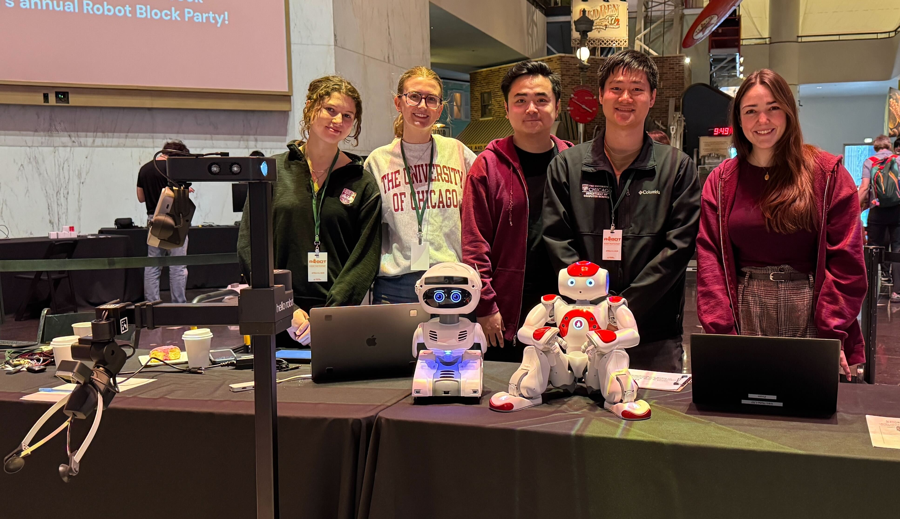
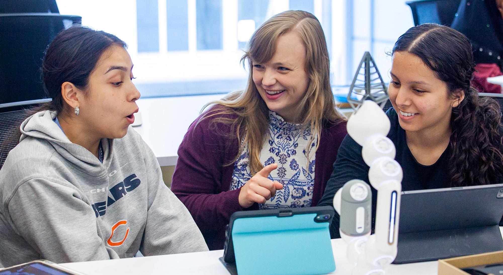

2025
Our Work Showing Robots are Less Anxious Reading Aloud to Robots Published in Science Robotics
Work in our lab led by Lauren Wright demonstrated that children experience less anxiety when reading aloud to a robot as opposed to a human adult. Published in Science Robotics (link to the article here) demonstrates a unique advantage that robots can have in educational settings, creating safe spaces for children to make mistakes while learning without fearing judgment. This work has already been featured in UChicago News and UChicago CS News.
Aug 28
Lauren Wright Presents Work on Ingroup/Outgroup Effects in Human-Robot Interactions with Multiple Robots at the 2025 RO-MAN Conference
Lauren recently presented her work exploring how people respond to a robot's instructions that may undermine another robot, specifically in the context of ingroup and outgroup dynamics, at the 2025 RO-MAN Conference. Read more about this exciting work soon, once the conference proceedings are published!

Jul 24
Our Work Exploring Neurotic Robot Personalities was Featured on NPR
NPR published a piece Neurotic robots can be more relatable than extroverted bots, study finds discussing the findings of our recent HRI 2025 paper exploring robot personality traits and the particular potential of neurotic personality traits for robots. You can read the full paper here (authors: Alex Wuqi Zhang, Clark Kovacs, Liberto de Pablo, Justin Zhang, Maggie Bai, Sooyeon Jeong, Sarah Sebo).
May 16
Our Work on User Perceptions of the Social Agency of Customizable Robots was Featured in UChicago CS News
Our work investigating user how users perceive robots as social agents when they have the ability to control and customize their behavior was featured in UChicago CS News — here's a link to the article. This work was published at HRI 2025 and received a best paper honorable mention award. You can read the full paper here (authors: Alex Wuqi Zhang, Rafael Queiroz, and Sarah Sebo).
May 8
Visit from Jodi Forlizzi
We hosted a visit from Jodi Forlizzi, Herbert A. Simon Professor in Computer Science and the Human-Computer Interaction Institute at Carnegie Mellon University. Jodi's visit included a talk on "The Role of Design in Purposeful and Pragmatic AI" as well as discussions with our lab members about our ongoing projects. We are grateful for her time and insights!

Apr 4
HRI Lab Participation at Museum of Science and Industry Robot Block Party
UChicago's HRI lab participated in the Museum of Science and Industry's annual Robot Block Party this past weekend, where we were able to showcase our robots and talk about human-robot interaction research with the Chicago community. It was fantastic to participate in such a fantastic event with other amazing roboticists in the Chicago area! During the event, our lab members and robots were also featured on local Chicago TV station Fox 32.
Mar 6
🏆 Best Paper Nomination at HRI 2025
Our paper Balancing User Control and Perceived Robot Social Agency through the Design of End-User Robot Programming Interfaces (authors: Alex Wuqi Zhang, Rafael Queiroz, and Sarah Sebo) to be presented at HRI 2025 by Alex Wuqi Zhang has been nominated for best paper!
Mar 6
Four Papers to be Presented at HRI 2025!
Our group has four papers accepted to the ACM/IEEE International Conference on Human Robot Interaction (HRI 2025) and we will present our work on March 6th (the final day of the conference):
- Balancing User Control and Perceived Robot Social Agency through the Design of End-User Robot Programming Interfaces by Alex Wuqi Zhang, Rafael Queiroz, and Sarah Sebo
- Connection-Coordination Rapport (CCR) Scale: A Dual-Factor Scale to Measure Human-Robot Rapport by Ting-Han Lin, Hannah Dinner, Tsz Long Leung, Bilge Mutlu, J. Gregory Trafton, and Sarah Sebo
- Enabling End Users to Program Robots Using Reinforcement Learning by Tewodros W. Ayalew*, Jennifer Wang*, Michael L. Littman, Blase Ur, and Sarah Sebo
- Exploring Robot Personality Traits and Their Influence on User Affect and Experience by Alex Wuqi Zhang, Clark Kovacs, Liberto de Pablo, Justin Zhang, Maggie Bai, Sooyeon Jeong, and Sarah Sebo
2024
Jul 12
PI Sarah Sebo Receives NSF CAREER Award
Sarah received the NSF CAREER award to fund work focused on developing social skills for robots to interact and collaborate with groups of people! You can read more about this exciting award and project in this UChicago CS Department news article.
Apr 14
HRI Lab Participation at Museum of Science and Industry Robot Block Party
UChicago's HRI lab participated in the Museum of Science and Industry's annual Robot Block Party this past weekend, where we were able to showcase our robots and talk about human-robot interaction research with the Chicago community. It was fantastic to participate in such a fantastic event with other amazing roboticists in the Chicago area! During the event, our lab members and robots were also featured on local Chicago TV stations NBC Chicago and WGN News.

Mar 18
Lab Meetings for Spring 2024
HRI lab meetings will be held during the 2024 Spring quarter on Tuesdays from 3:30pm - 4:30pm in JCL 354 starting Tuesday, March 19. If you’re a current UChicago student and interested in learning more about our research and/or how to get involved with our research, please feel free to join our weekly lab meetings. Feel free to email sarahsebo@uchicago.edu if you have any questions.
Mar 14
Honorable Mention for Best Paper at HRI 2024
Our paper A Taxonomy of Robot Autonomy for Human-Robot Interaction (authors: Stephanie Kim, Jacy Reese Anthis, and Sarah Sebo) presented at HRI 2024 by Stephanie Kim was given an honorable mention for best paper!
Mar 12-14
Presentations & Participation at HRI 2024
Stephanie Kim, Spenger Ng, Jacy Anthis, and Sarah Sebo attended the ACM/IEEE International Conference on Human Robot Interaction (HRI 2024) in Boulder Colorado. Stephanie and Spencer both presented their papers:
- A Taxonomy of Robot Autonomy for Human-Robot Interaction by Stephanie Kim, Jacy Reese Anthis, and Sarah Sebo
- Role-Playing with Robot Characters: Increasing User Engagement through Narrative and Gameplay Agency by Spencer Ng, Ting-Han Lin, You Li, and Sarah Sebo
Feb 10
New THRI Publication: RoSI A Model for Predicting Robot Social Influence
PI Sarah Sebo is a joint author of the paper RoSI A Model for Predicting Robot Social Influence that was just accepted for publication at THRI. This paper proposes a new conceptual model that predicts the level of social influence a robot has in a human-robot interaction based on two factors: violation of expectation and a person's social belonging with the robot. To learn more, please read the paper:
- RoSI A Model for Predicting Robot Social Influence by Hadas Erel*, Marynel Vázquez*, Sarah Sebo*, Nicole Salomons*, Sarah Gillet*, and Brian Scassellati* (* equal contribution)
Feb 6
Interaction-Shaping Robotics Paper Published in THRI
PI Sarah Sebo is a member of a collaborative team that has just published a paper in the THRI journal defining the sub-field of HRI called Interaction-Shaping Robotics (ISR). ISR investigates robots that influence the behaviors and attitudes exchanged between two (or more) other agents. To learn more, please read the paper:
- Interaction-Shaping Robotics: Robots that Influence Interactions between Other Agents by Sarah Gillet, Marynel Vázquez, Sean Andrist, Iolanda Leite, and Sarah Sebo
Jan 5
Lab Meetings for Winter 2024
HRI lab meetings will be held during the 2024 Winter quarter on Mondays from 3:30pm - 4:30pm in JCL 346 starting Monday, January 8. If you’re a current UChicago student and interested in learning more about our research and/or how to get involved with our research, please feel free to join our weekly lab meetings. Feel free to email sarahsebo@uchicago.edu if you have any questions.
2023
Nov 22
Two Papers Accepted to HRI 2024
Our group has two papers accepted to the ACM/IEEE International Conference on Human Robot Interaction (HRI 2024):
- A Taxonomy of Robot Autonomy for Human-Robot Interaction by Stephanie Kim, Jacy Reese Anthis, and Sarah Sebo
- Role-Playing with Robot Characters: Increasing User Engagement through Narrative and Gameplay Agency by Spencer Ng, Ting-Han Lin, You Li, and Sarah Sebo
Nov 8
UChicago Magazine Article about Summer High School Robotics Course Taught by Members of the HRI Lab
On a hot morning in July, a sleepy John Crerar Library starts to rouse as students arrive for Introduction to Robot Programming and Design, a college-level summer course for Chicago Public Schools rising seniors. Since Crerar’s renovation five years ago,...
Oct 20
Midwest HRI Meetup 2023
The Human-Robot Interaction (HRI) labs at the University of Chicago (UChicago), the University of Wisconsin-Madison (UW Madison), and the University of Illinois at Urbana-Champaign (UIUC) gathered to discuss future collaborations.

April 24
CHI 2023 Paper Acceptance
Our group had a paper accepted to CHI 2023 Conference on Human Factors in Computing Systems (CHI '23)
Ice-Breaking Technology: Robots and Computers Can Foster Meaningful Connections between Strangers through In-Person Conversations by Alex Wuqi Zhang, Ting-Han Lin, Xuan Zhao, Sarah Sebo
Mar 31
HRI Lab Demos at Chicago's Museum of Science and Industry's Robot Block Party
Our lab demoed our some current research projects at Chicago's Museum of Science and Industry for their Robot Block Party event. It was incredibly fun to share our work and robots with so many interested children, adults, and robo-enthusiasts!


Mar 29
UChicago, Stanford Researchers Explore How Robots and Computers Can Help Strangers Have Meaningful In-Person Conversations
A first-of-its-kind study looked at the effectiveness of using technological facilitators to “break the ice” between strangers and increase overall well-being.
Mar 20
Lab Meetings for Spring 2023
HRI lab meetings will be held during the 2023 Spring quarter on Mondays from 11:30am - 12:30pm in JCL 346 starting Monday, March 27. If you’re a current UChicago student and interested in learning more about our research and/or how to get involved with our research, please feel free to join our weekly lab meetings. Feel free to email sarahsebo@uchicago.edu if you have any questions.
Jan 8
University of Chicago Prof. Sarah Sebo presents robot-human interaction research
Imagine a world where humans empathize with robots. Well, according to recent research at the University of Chicago, they already do. About 40 students gathered in classroom B211 in the Technological Institute Friday afternoon to hear about University of Chicago computer science Prof. Sarah Sebo’s research as director of the Human-Robot Interaction Lab. Sebo presented
Jan 04
Lab Meetings for Winter 2023
HRI lab meetings will be held during the 2023 Winter quarter on Wednesdays from 3:00pm - 4:00pm in JCL 346 starting Wednesday, Jan 11. If you’re a current UChicago student and interested in learning more about our research and/or how to get involved with our research, please feel free to join our weekly lab meetings. Feel free to email sarahsebo@uchicago.edu if you have any questions.
2022
Sep 28
Lab Meetings for Fall 2022
HRI lab meetings will be held during the 2022 Fall quarter on Wednesdays from 12:30pm - 1:30pm in JCL 354 starting Wednesday, September 28. If you’re a current UChicago student and interested in learning more about our research and/or how to get involved with our research, please feel free to join our weekly lab meetings. Feel free to email sarahsebo@uchicago.edu if you have any questions.
Sep 27
Welcoming New PhD Students
This fall, we are welcoming two new PhD students to the lab: Lauren Wright and Tewodros Ayalew. Welcome Lauren and Tewodros!
Aug 30
RO-MAN 2022 Paper Presentations
Our group is presenting 3 papers at the IEEE International Conference on Robot & Human Interactive Communication (RO-MAN 2022):
- Physical Touch from a Robot Caregiver: Examining Factors that Shape Patient Experience by Alex Mazursky, Madeleine DeVoe, and Sarah Sebo
- Benefits of an Interactive Robot Character in Immersive Puzzle Games by Ting-Han Lin*, Spencer Ng*, and Sarah Sebo (*equal contribution)
- Parental Responses to Aggressive Child Behavior towards Robots, Smart Speakers, and Tablets by Keziah Naggita, Elsa Athiley, Beza Desta, and Sarah Sebo
Aug 29
HRI Lab at 2022 RO-MAN
Lauren, Spencer, and Timmy are attending RO-MAN in Naples, Italy this week to present their work!

May 30
RO-MAN 2022 Paper Acceptances
Our group had 3 papers accepted to the IEEE International Conference on Robot & Human Interactive Communication (RO-MAN 2022):
- Physical Touch from a Robot Caregiver: Examining Factors that Shape Patient Experience by Alex Mazursky, Madeleine DeVoe, and Sarah Sebo
- Benefits of an Interactive Robot Character in Immersive Puzzle Games by Ting-Han Lin*, Spencer Ng*, and Sarah Sebo (*equal contribution)
- Parental Responses to Aggressive Child Behavior towards Robots, Smart Speakers, and Tablets by Keziah Naggita, Elsa Athiley, Beza Desta, and Sarah Sebo
Apr 9
HRI Lab Demos at Chicago's Museum of Science and Industry's Robot Block Party
Our lab demoed our some current research projects at Chicago's Museum of Science and Industry for their Robot Block Party event. It was incredibly fun to share our work and robots with so many interested children, adults, and robo-enthusiasts!


Apr 4
Lab Meetings for Spring 2022
HRI lab meetings will be held during the 2022 Spring quarter on Mondays from 3:00pm - 4:00pm CST in JCL 354 starting Monday, April 4. If you’re a current UChicago student and interested in learning more about our research and/or how to get involved with our research, please feel free to join our weekly lab meetings. Feel free to email sarahsebo@uchicago.edu if you have any questions.
Mar 15
HRI Lab at Chicago's Green River
Some of the HRI Lab members visited Chicago's Green River while in downtown Chicago. The city dyes the Chicago river green each year for St. Patrick's day.

Mar 4
Robot Demos for CS PhD Visit Day
We had our first in-person lab demo session for the admitted CS PhD students visit day!

Jan
Sarah on Parental Leave
Sarah delivered her baby in December of 2021 and is on parental leave during the Winter quarter of 2022.
2021
Nov 1
Brainstorming at our HRI Lab Meeting
We brainstormed activities that might increase an interpersonal bond between a human and a robot during our weekly lab meeting.

Oct 4
Lab Meetings for Fall 2021
HRI lab meetings will be held during the 2021 Fall quarter on Mondays from 4:00pm - 5:00pm CST in JCL 354 starting Monday, October 4. If you’re a current UChicago student and interested in learning more about our research and/or how to get involved with our research, please feel free to join our weekly lab meetings. Feel free to email sarahsebo@uchicago.edu if you have any questions.
Sept 27
Topics in Human-Robot Interaction Class
For UChicago students interested in learning more about human-robot interaction research, in the fall quarter of 2021 PI Sarah Sebo is teaching CMSC 33281 Topics in Human-Robot Interaction. This course gives students a broad overview of current cutting-edge research in HRI and also provides students with the opportunity of conducting their very own HRI research project.
Aug 20
HRI Lab - Summer Research Team
This summer, 4 undergraduate UChiacgo students conducted summer internships in the HRI lab working on a variety of interesting projects - we had a great time!

Mar 29
Introduction to Robotics Class (Spring 2021)
For UChicago students interested in learning more about robotics, in the spring quarter of 2021 PI Sarah Sebo is teaching CMSC 20600 Introduction to Robotics . This course is a hands-on and project based course designed to give students familiarity programming physical robots and real-world environments. Check out the course website for more details.
Jan 21
HRI Lab First Meeting
We, the HRI lab at UChicago, had our first lab meeting! Lab meetings will occur every week from 3:00pm - 4:00pm on Thursdays. If you’re a current UChicago student and interested in learning more about our research and/or how to get involved with our research, please feel free to join our weekly lab meetings (email sarahsebo@uchicago.edu for the Zoom link).
Jan 11
Introduction to Robotics Class (Winter 2021)
For UChicago students interested in learning more about robotics, in the winter quarter of 2021 PI Sarah Sebo is teaching CMSC 20600 Introduction to Robotics . This course is a hands-on and project based course designed to give students familiarity programming physical robots and real-world environments. Check out the course website for more details.
2020
Dec 22
Published Research
PI Sarah Sebo’s work The Influence of Robot Verbal Support on Human Team Members: Encouraging Outgroup Contributions and Suppressing Ingroup Supportive Behavior has been published in Frontiers in Psychology: Performance Science in their special issue Teamwork in Human-Machine Teaming.
Oct 21
Presentation of Work
PI Sarah Sebo presented her work Robots in Groups and Teams: A Literature Review at the virtual CSCW 2020 conference.